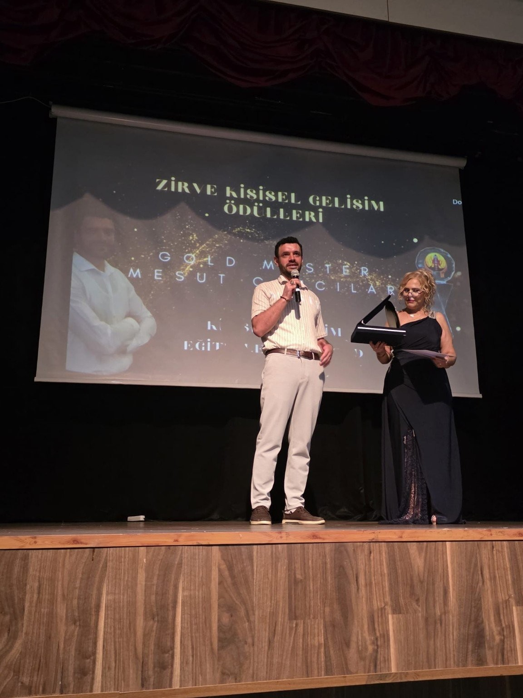
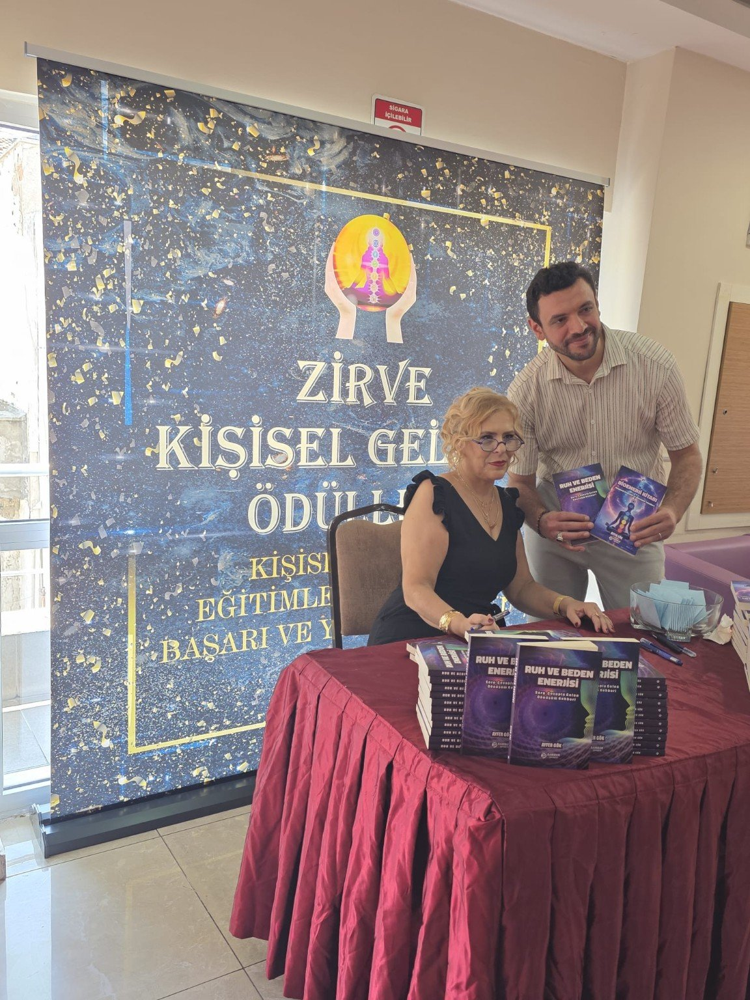

KENDİNE AÇILAN BİR KAPI
İçindeki ışığı yansıt.
Hayatın yoğunluğu içinde kendine zaman ayır. İçsel denge, pozitif yaşam alışkanlıkları ve manevi farkındalık üzerine samimi, saygılı görüşmelerle kendi yolculuğuna alan aç.
✦ Online görüşme talepleri ✦ Kişisel gelişim odağı

AYNA'YA HOŞ GELDİNİZ
Değişim, kendine bakmakla başlar.
AYNA Yaşam Danışmanlığı; farklı inanç ve yaşam tarzlarına saygılı, kişisel gelişim ve iyi oluş odaklı bir buluşma alanıdır. Amacımız, kendinizi dinlemenize ve günlük yaşamınızda daha bilinçli seçimler yapmanıza destek olmaktır.
Kurucu Mesut Çancılar; Gold Master enerji eğitimi, bioenerji, kozmik enerji ve spiritüel danışmanlık gibi alanlarda çeşitli eğitimler tamamlamıştır. Bu eğitimler tıbbi veya psikolojik mesleki yetki anlamına gelmez.
Eğitim geçmişini incele →
KURUCU İLE TANIŞIN
Mesut Çancılar
AYNA Yaşam Danışmanlığı Kurucusu
İnsanın kendini tanıma, içsel farkındalık geliştirme ve yaşamına yeni bir bakış açısı kazandırma yolculuğunda, kişisel gelişim ve enerji çalışmaları alanında aldığım eğitimler doğrultusunda bireysel görüşmeler sunuyorum.
Farklı yaşam tarzlarına ve inançlara saygılı, yargılamayan bir iletişimi önemsiyorum.
Görüşme seçeneklerini incele →HİZMETLERİMİZ
Kendin için bir adım at.
İhtiyacına uygun görüşme alanını keşfet. Her hizmetin kapsamı, görüşme öncesinde açıklanır.
Pozitif Yaşam ve İçsel Denge
Olumlu alışkanlıklar, farkındalık, şükür ve günlük hayatta kendine alan açma üzerine bireysel görüşmeler.
Bilgi ve görüşme talebi ↗Manevi Farkındalık
Nazar ve haset gibi konulardaki manevi kaygıları, kişinin inançlarına saygı duyarak ele alan destekleyici sohbetler.
Bilgi ve görüşme talebi ↗Geleneksel Enerji Çalışmaları
Bioenerji ve kozmik enerji gelenekleri hakkında bilgilendirme ve tıbbi olmayan, isteğe bağlı bireysel uygulamalar.
Bilgi ve görüşme talebi ↗Önemli: Hizmetlerimiz tıbbi tanı, tedavi veya psikolojik terapi değildir. Nazarın tespiti, hastalıkların iyileştirilmesi ya da doğaüstü koruma konusunda garanti verilmez.
AYNA · DOĞAL TAŞ KOLEKSİYONU
Kişiye özel doğal taş danışmanlığı
Her taşın kendine özgü görünümü, her insanın farklı tercihleri ve niyetleri vardır. Doğal taşları geleneksel sembolik anlamlarıyla keşfedin.
✧ Kişiye Özel Doğal Taş Seçimi
Renk, kullanım amacı, kişisel beğeni ve isteğe bağlı olarak isim ile doğum tarihinden yapılan sembolik yorumlar doğrultusunda taş seçeneklerini birlikte değerlendiriyoruz.
İsim ve doğum tarihine dayalı yorumlar bilimsel enerji ölçümü veya kesin uyum tespiti değildir.
WhatsApp'tan danışmanlık bilgisi al ↗◇ Kişiye Özel Doğal Taş Hazırlama
Tercihinize göre doğal taş bileklik veya uygun diğer ürün seçeneklerini görüşebilir, kişisel niyetinizle ilişkilendirdiğiniz sembolik bir tasarım talep edebilirsiniz.
Taşın türü, gerçekliği, ölçüsü, malzemesi, stok durumu, toplam fiyatı, kargo ve teslimat koşulları sipariş onayından önce açıklanır. Sipariş, karşılıklı teyit edilmeden kesinleşmez.
WhatsApp'tan kişiye özel sipariş sor ↗Uyumlama ve niyet çalışması: Talep eden kişiler için taşın sembolik anlamına odaklanan kişisel niyet belirleme yaklaşımı sunulabilir. Doğal taşların hastalıkları tedavi ettiği, koruma sağladığı veya isim/doğum tarihiyle bilimsel olarak enerji uyumu gösterdiği iddia edilmez. Gizlilik: İsim ve doğum tarihi yalnızca kişinin isteğiyle ve gerekli olduğu ölçüde paylaşılır; sipariş için doğum tarihi zorunlu değildir.
ŞEFFAF FİYATLANDIRMA
Görüşme ücretleri
Görüşme türünü ve ücretini önceden bilerek karar verin. WhatsApp üzerinden yalnızca uygun gün ve saat için iletişime geçin.
Ön Tanışma
Kısa tanışma ve beklenti değerlendirmesi. Danışmanlık seansı değildir.
Tarih seçerek randevu iste →Bireysel Farkındalık
Kişisel farkındalık, yaşam alışkanlıkları ve hedefler üzerine bireysel görüşme.
Tarih seçerek randevu iste →Yüz Yüze Görüşme
Görüşme yeri ve uygun gün, randevu öncesinde karşılıklı belirlenir.
Tarih seçerek randevu iste →AYNA Dört Görüşme Paketi
Dört görüşme, kişisel farkındalık çalışmaları ve haftalık hedef değerlendirmesi.
Tarih seçerek randevu iste →Tarih seçerek randevu talep et
Fiyatlar Türk lirası cinsindendir. Randevu, karşılıklı teyit sonrası kesinleşir. Hizmetler tıbbi tanı, tedavi veya psikolojik terapi yerine geçmez. Sonuç garantisi verilmez.
EĞİTİM İŞ BİRLİĞİ
Eğitim programları
Kişisel gelişim ve enerji eğitimleri hakkında kısa bilgi alın. Ayrıntıları görmek için aşağıdaki bölümü açın.
Eğitimler ve iş birliği bilgileri
AYNA Yaşam Danışmanlığı, kişisel gelişim, bioenerji, kozmik enerji ve farkındalık eğitimleriyle ilgilenenlere bilgi ve başvuru yönlendirmesi sunar.
Eğitimler, iş birliği yaptığımız Ayfer Gök – Zirve Kişisel Gelişim Akademisi tarafından verilmektedir.
Bilgilendirme: AYNA eğitimlerin doğrudan sağlayıcısı değildir. Eğitim programı, ücretler, katılım ve belgelendirme koşulları eğitim kuruluşu tarafından belirlenir. Sertifikalar kendiliğinden resmî mesleki yetki sağlamaz.
WhatsApp’tan Eğitim Bilgisi Al ↗EĞİTİM GEÇMİŞİ
Şeffaflık güvenin başlangıcıdır.
Mesut Çancılar'ın paylaştığı eğitim belgelerinde yer alan programlardan seçmeler:
Eğitim geçmişimi görüntüle
Gold Master Enerji Eğitimi120 saat • Göyçe Zengezur Üniversitesi belgesi
Bioenerji Master Eğitimi120 saat • Rauf Denktaş Üniversitesi belgesi
Spiritüel Danışmanlık Eğitimi120 saat • Rauf Denktaş Üniversitesi belgesi
EFT Eğitimi160 saat • Biruni Üniversitesi belgesi
Bu bölümdeki bilgiler paylaşılan belge görsellerine dayanmaktadır; düzenleyici kurumlar ve belgelere ilişkin resmî yetki veya akreditasyon iddiaları bağımsız olarak doğrulanmamıştır. Eğitim sertifikaları sağlık alanında uygulama yetkisi vermez.
Belge görüntüleme sayfası ↗EĞİTİM VE ETKİNLİKLER
Ödüllerim ve etkinliklerden kareler
Zirve Kişisel Gelişim Ödülleri etkinliğinden ve Gold Master ödül takdiminden fotoğraflar.
Ödül ve etkinlik galerimi görüntüle


Kitap ve etkinlik buluşması
Zirve Kişisel Gelişim etkinliğindeki kitap standından bir kare.
Fotoğrafı büyüt ↗Fotoğraflar gerçek etkinliklerden alınmıştır. Ödül ve eğitimler tıbbi veya psikolojik mesleki yetki anlamına gelmez.
AYNA BİLGİ REHBERİ
Merak ettiğiniz kavramları keşfedin.
Enerji yaklaşımlarının geleneksel anlamları, uygulama kapsamı ve bilimsel sınırları hakkında açıklayıcı bilgiler.
Bioenerji
Bioenerji, bazı geleneksel ve tamamlayıcı yaklaşımlarda kişinin “yaşam enerjisi” olduğu düşüncesiyle ilişkilendirilen bir kavramdır.
Ayrıntılı bilgi →WhatsApp’tan sor ↗Kozmik Enerji
Kozmik enerji, bazı spiritüel geleneklerde evrenle bağlantı ve içsel uyum düşüncesini anlatmak için kullanılan bir terimdir.
Ayrıntılı bilgi →WhatsApp’tan sor ↗Spiritüel Enerji
Spiritüel enerji, kişinin anlam arayışı, inançları, iç dünyası ve manevi deneyimlerini tanımlamak için kullanılan geniş bir ifadedir.
Ayrıntılı bilgi →WhatsApp’tan sor ↗EFT (Duygusal Özgürleşme Tekniği)
EFT, belirli noktalara hafifçe vurma hareketlerini sözlü ifadeler ve dikkat egzersizleriyle birleştiren bir kişisel gelişim yaklaşımıdır.
Ayrıntılı bilgi →WhatsApp’tan sor ↗Bu içerikler tıbbi veya psikolojik tedavi iddiası içermez; bilimsel olarak doğrulanmamış enerji etkileri kesin gerçekler gibi sunulmaz.
MERAK EDİLENLER
Sık sorulan sorular
Görüşme nasıl yapılır?
Hizmet türünü ve uygun gördüğünüz tarih-saat aralığını seçip WhatsApp üzerinden talep gönderebilirsiniz. Randevu ancak karşılıklı onayla kesinleşir.
Online görüşmeye nasıl katılırım?
Görüşmenin iletişim yöntemi ve bağlantısı, randevu kesinleştikten sonra WhatsApp üzerinden paylaşılır.
Ücretleri nereden görebilirim?
Fiyatlar bölümünde ücretsiz ön tanışma, bireysel online görüşme, yüz yüze görüşme ve dört görüşmelik paketin süre ve ücretleri açıkça yazılıdır.
Bioenerji ve kozmik enerji bir tedavi yöntemi midir?
Hayır. AYNA bu kavramları kişisel gelişim ve geleneksel/spiritüel yaklaşımlar bağlamında ele alır. Tıbbi tanı, tedavi ve psikoterapi sunmaz; iyileşme garantisi vermez.
Eğitimleri AYNA mı veriyor?
Hayır. Eğitimlerle ilgili bilgi ve yönlendirme yapılır; programlar Ayfer Gök – Zirve Kişisel Gelişim Akademisi tarafından sunulur.
Randevu için internetten ödeme gerekiyor mu?
Hayır. Sitede online ödeme sistemi yoktur. WhatsApp mesajı göndermek ödeme veya kesin randevu anlamına gelmez.
İLETİŞİM
İlk adımı birlikte atalım.
Bireysel görüşme veya eğitim hakkında bilgi almak için doğrudan WhatsApp üzerinden yazabilirsiniz. Mesajınız size ait WhatsApp uygulamasında açılır; göndermeden önce kontrol edebilirsiniz.
Görüşme ücretleri yukarıdaki fiyat tablosunda açıkça belirtilmiştir; randevu günü ve saati karşılıklı netleştirilir. Tıbbi veya psikolojik tedavi sunulmaz.
WhatsApp ile iletişime geç
Mesut Çancılar ile doğrudan iletişim kurun.
WhatsApp'tan Mesaj Gönder ↗0544 748 34 71